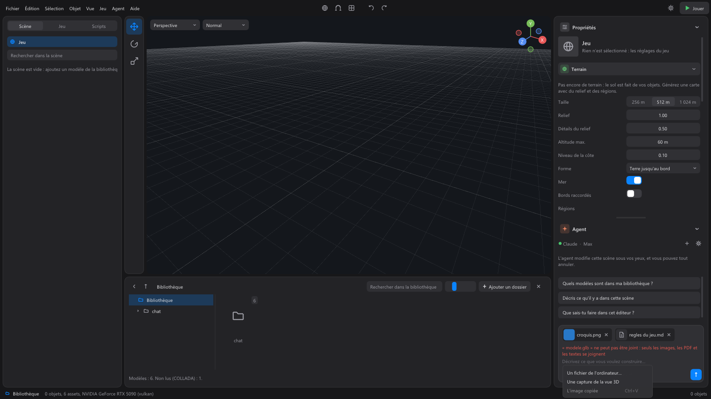

The agent¶
The agent is an AI assistant that builds your game in the editor. You talk to it in the Agent panel, at the bottom of the right column; it acts on the open scene, before your eyes. "The agent changes this scene before your eyes, and you can undo everything."
It is your agent: Claude (Anthropic's Claude Code program) or Codex (by OpenAI), started by the editor with your own account. The editor never sees your credentials. The agent only has the tools the editor gives it: it can neither read your files nor run commands on the computer. The full list of what it can do is in What the agent does.
Signing in¶

On the first launch, the panel shows Connect your agent.
- Choose the agent: Claude or Codex.
- If it is not installed, the panel says so ("First, install Claude Code, the Anthropic program that links the editor to your account."). Install runs the official installer of this program. See the installation page opens its page in the browser, and Check again looks for the program again. Codex requires Node.js to install.
- Choose how to sign in:
For Claude:
| Choice | For whom |
|---|---|
| Claude subscription | Pro, Max, Team or Enterprise. Anthropic's page opens in your browser. |
| Anthropic Console account | Billed by usage. Anthropic's page opens in your browser. |
| Anthropic API key | Billed by usage. Paste the key, then Use this key: it is kept encrypted for your Windows session. |
| Bedrock, Vertex or Foundry | Uses the configuration already on this machine, as in VS Code. Without a configuration, the panel says so: set the provider's variables, then restart the editor. |
For Codex:
| Choice | For whom |
|---|---|
| ChatGPT account | Plus, Pro, Business or Enterprise. OpenAI's page opens in your browser. |
| OpenAI API key | Billed by usage. Codex keeps it itself, not the editor. |
With a browser choice, the panel shows "Waiting for your browser…": finish signing in on the page that just opened, the panel updates by itself. The Undo button there gives up. If it fails, the panel says why, and Try again starts over.
Updating the agent¶
A recent model often needs a recent version of the agent's program. The editor reads that version at each connection, and also recognizes it in the answer of a model that refuses a version that is too old. The panel then shows "Claude Code must be updated for this model.", with the version needed and the one installed.
- Update runs the official update (for Claude, this is
claude update; for Codex, its installation, which sets up the version checked by WorldMint). The panel shows that it is working, reads the version again, then reconnects the agent, without closing the editor. All that is left is to send your message again. - If it fails, the panel says what to do. Most often, the program's file is open somewhere else: close the Claude desktop app, VS Code and the terminals where Claude Code runs, then click Update again. You can also type
claude updatein a terminal. - Technical details shows the exact text of the problem and what the update wrote, to copy into a help request.
- At connection time, Continue without updating keeps the installed version: models that need a newer one will refuse to answer, and the panel will offer the update again.
The known version Claude needs is kept in the config/agents.json file, next to the editor (minimumVersion). The editor also remembers the one the model asks for, even a newer one.
Talking to the agent¶
Once signed in, the top of the panel shows the agent and your account (for example "Claude · Max"), with two buttons: + (New conversation) and the gear (Agent settings).
An empty conversation offers three ideas: "Which models are in my library?", "Describe what is in this scene", "What can you do in this editor?". A click sends one.
The input area ("Describe what you want to build…"):
- Enter sends the message; Shift+Enter starts a new line. The round button, on the right, sends too (Send (Enter)).
- While the agent works, this button becomes a square: Stop the agent. The answer is then marked "Stopped.".
- Above the area, "Selection: Door" recalls what is selected in the scene: the agent knows it too. So you can say "make this one bigger".
- Writing the path of a folder of your computer in a message adds it to the library, so the agent can use it.
In a project, there is a single conversation for the whole game: the agent goes from one scene to another without losing it, and it is kept when you close the editor.
Attaching files¶

The paperclip (Attach an image, a PDF or a text (or drop it here)) offers:
- A file from the computer…: an image, a PDF or a text;
- A capture of the 3D view: what the view shows, to show the agent what you see;
- The copied image (Ctrl+V in the input area): a screenshot, an image copied from a website.
You can also drag a file from File Explorer onto the Agent panel. Attached files show as thumbnails above the text; a thumbnail's cross removes it, a click opens it in full. Limits: ten attachments per message, a PDF of 20 MB at most, a text of 200 KB at most. Codex does not read PDFs: attach an image or a text instead.
Model and effort¶
Under the input area, two discreet lists:
- The model that answers: Default (the one your agent chooses), or for Claude Opus 5.5, Sonnet 5.5, Haiku 5.5, Fable 5.1.
- Reasoning effort: "the higher it is, the more the agent thinks before acting, and the slower it is". For Claude: Low, Medium, High, Extra high, Max; for Codex: Minimal, Low, Medium, High.
The change applies from the next message.
While it works¶
- "Thinking… 12 s" shows that it is progressing, with the number of tokens of its reasoning.
- Its actions show in folded groups, each as a short sentence: "Reading the scene", "Creating objects (5)", "Playing the game"... A click opens the group. A refusal stays visible without opening the group.
- Its plan stays shown at the top of the conversation for a long job: the current step, and the number of steps done. A click shows all the steps, and the proof given for each.
- If it gives no news for a while, the panel says so: it may still be working, and the square button stops it.
Under each answer: its duration, the number of actions, the cost if your account is billed by usage, and Undo these changes, which undoes at once everything the agent changed during that turn. Its changes are also undone one by one with Ctrl+Z.
Copy: drag over the text of a message to select it (a double-click takes a word), then Ctrl+C or right-click > Copy. The Copy message icon, on hover, copies a whole message. Links open with a click.
Agent settings¶
The gear of the panel (or Agent > Agent settings). Back returns to the conversation.
| Section | What you find there |
|---|---|
| Account | The Claude / Codex choice, the signed-in account ("Signed in: ..."), Change connection, and Sign out (or Forget this connection), to confirm with Confirm sign out. Note: signing out applies to the whole computer, not only the editor. |
| Model | The model that answers. |
| Reasoning effort | The level of reasoning. "The change applies from the next message." |
| Program | The path of the agent's program. Empty: the editor finds it by itself ("Automatic detection: ..."). |
| Agent rules | "The agent follows the method that comes with the editor: a plan, a game playable at every step, and proof." Customize for this project creates an AGENT.md file in the project, which you can edit; then Open this project's rules opens it. See The agent's guide. |
| Another agent | "Another agent can connect to the editor from your terminal. It then keeps its own tools, so only do this if you trust it." Allow the agent opens the access; Copy the command copies the command to run in the terminal. It contains an access key: don't share it. |
What it can do¶
The agent builds worlds (terrain, water, vegetation, objects set on the ground), places the player and sets its animations, activates and sets game systems, writes scripts, creates and links scenes, plays the game without a window to check that it works, looks at the scene as an image, and exports the game. It follows a method: it presents a plan for a large request, keeps the game playable at every step, and gives proof.
- The list of its tools: What the agent does.
- Its method: The agent's guide.
- What it knows about each system: the systems reference.